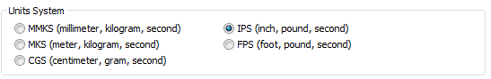

Activity 3: Work with imperial (English) units
In this activity you will learn how Femap handles units when you are working in a Solid Edge Simulation document that uses an ANSI template with imperial units (English units).
Femap is configured to handle model files created in an ANSI template as one of its two default standards. ANSI units are consistent with inches, pound-force, seconds, slinch (lbm/386.07), and degrees Fahrenheit.
This activity requires that you have a separate installation and license for Femap.
-
Save the Solid Edge part file in imperial units:
-
Open the Solid Edge Simulation file containing the 10x10x100 mm part you created in the first activity. Use the Save As command on the File menu to create a copy of the file and give it a new name, such as part_units_english.par.
-
On the File menu, click Info→File Units.
The Units tab in the Solid Edge Options dialog box is displayed.
-
On the Units tab, under Units System, observe that MMKS (millimeter, kilogram, second) is currently selected, based on the metric template.
-
Select IPS (inch, pound, second) to change to the imperial unit system.

-
Click Yes in the first message box, Unit system is being changed. Customized units for existing unit system will be lost. Do you want to continue?.
If a second message about dimension styles is displayed, click OK .
On the Units tab, under Base Units, observe that the model base units are now set to the imperial unit system of in, lbm, sec, and Fahrenheit for length, mass, time, and temperature.
Also observe that the units of measure in the Derived Units table also changed.
-
Reprocess the study using the Simulation tab→Solve group→Solve command.
When processing is finished, in the Simulation Results environment, observe that the maximum Von Mises Stress is reported in ksi.

-
Click Close Simulation Results on the ribbon.
-
Close Solid Edge.
-
-
Start Femap:
-
Start the Femap program from the desktop or from the Start menu.
Note:Do not use the Tools tab→Environs group→Femap command.
-
Choose File→Preferences.
-
In the Preferences dialog box, click the Geometry/Model tab.
Observe that the option selected by default in the Solid Geometry Scale Factor list is 0. Inches.
This is the default unit for working with model geometry in Imperial units (English units) in Femap. It applies a scale factor of 39.37 to make the appropriate adjustments to Solid Edge files in which the length readout unit is inch.
Note:This sets a value of 39.37 (i.e., inches-to-meters conversion), and this factor is applied internally in Femap so that a part of 1.0 on the desktop will be stored as 0.0254 in the database. The default of 39.37 is chosen since it allows you to import a part that was modeled in inches in CAD software, and continue to work in inches without manually having to scale the part. You can also choose to set the Solid Geometry Scale Factor to 1. Meters (value of 1.0), 2. Millimeters (value of 1000.0), or 3. Other, which allows you to specify a value of your choice.
This is a startup preference; therefore, you must save the preference and exit Femap for it to take effect.
-
Close Femap.
-
-
Import the Solid Edge part file into Femap:
-
Restart Femap.
-
Choose File→Import, and then select and open the part file in imperial units, for example, part_units_english.par.
-
Click OK to dismiss the Neutral File Read Options dialog box.
-
In the Model Info pane, review the material properties.
-
Observe that the pressure load, which was reported in the Solid Edge Simulation study in ksi, is converted to psi In Femap.
-
Also note that the following units are set in Femap, based on the imperial unit standard of inch:
Model data units
Equivalent Femap model units (based on inch)
Length
inch
Force
pound-force (lbf).
Mass
slinch (lbm/386.07)
Temperature
Fahrenheit (F)
Stress, pressure
pounds/in² (psi)
-
-
Close Femap without saving the file.
-